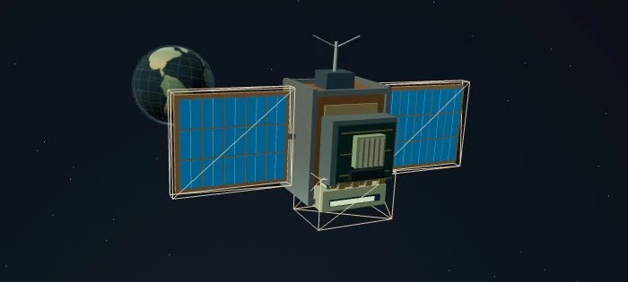
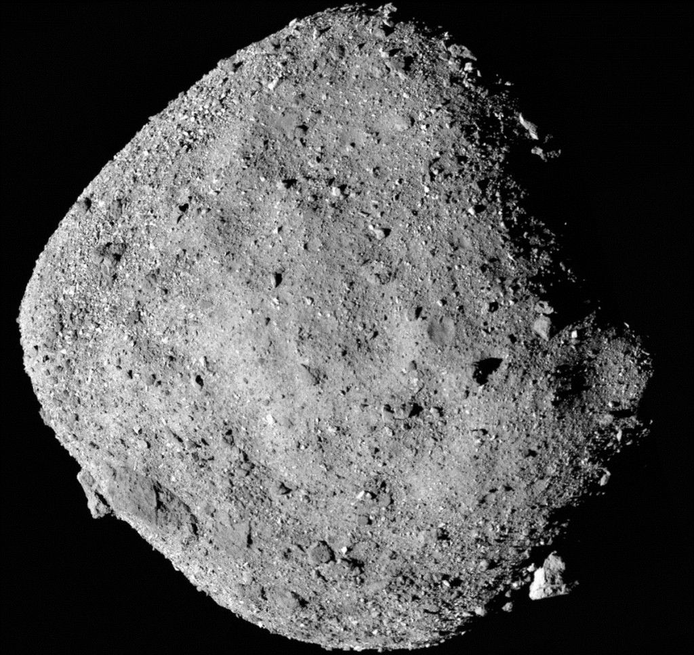
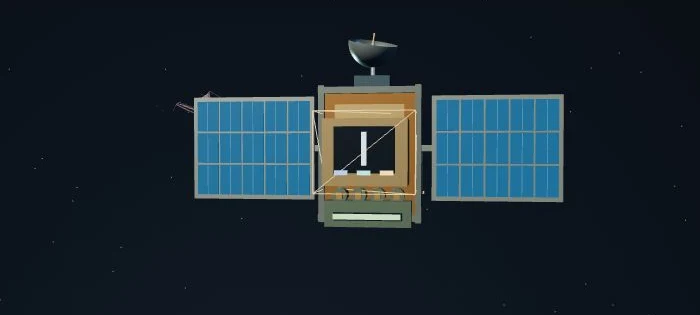
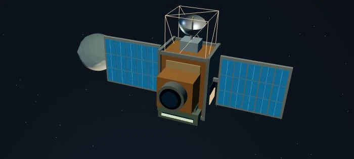
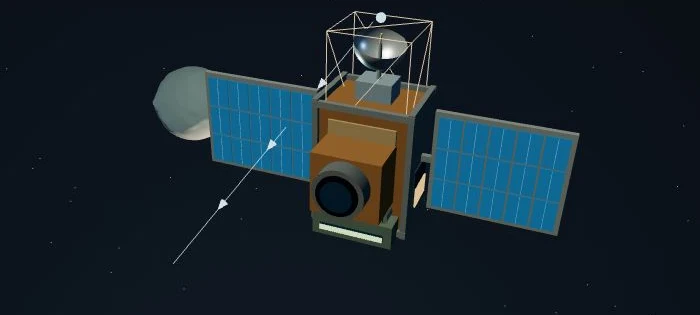

Cerrado
Compare enviar bandas e calcular um índice. Distinga potência instantânea de energia armazenada.
Terra/MODIS · dois períodos de 2024
No Webb do jogo, duas configurações entregam seis pacotes. Só uma entrega medidas que respondem à pergunta.

Apresentado por Alexandre Belo
alexandrebelo.com.brUma pontuação deixa em aberto qual decisão interrompeu a missão, qual dado se perdeu e o que ainda podemos concluir.

Brasil central · imagem de contexto Terra/MODIS, 2000
Um jogo de engenharia espacial em que você projeta, faz uma previsão e usa a evidência recebida para redesenhar a missão.
Compare enviar bandas e calcular um índice. Distinga potência instantânea de energia armazenada.
Terra/MODIS · dois períodos de 2024

Compare dimensões. Diferencie os dados produzidos na nave dos registros que chegaram ao solo.
Mosaico PolyCam · NASA/Goddard/University of Arizona

Escolha o instrumento pela pergunta. Leia a luz bloqueada por faixa e a incerteza de cada medida.
Qual serviço de solo entrega mais dados de Bennu? A taxa permanece em 1,2 Mbit/s.


Dimensões publicadas · 6 registros
Mesmo rádio, duas capturas em T+85 min. O serviço ampliado muda início e duração das janelas e custa 6 créditos a mais. As dimensões vêm de OSIRIS-REx.
Executar o ensaio e inspecionar o 3D no laboratório (nova aba)Jogamos as três missões localmente. Conferimos a entrega, a interpretação e o caminho da medida de volta à decisão.
A próxima verificação é com iniciantes: conseguem explicar uma falha e justificar o redesenho?
Lançamento A massa da configuração cabe no limite do lançador?
Espaço Qual evento a bordo explica o resultado?
Solo Quais registros chegaram durante as janelas de contato?
Usuários O que as medidas recebidas permitem concluir?
Escolham uma missão e mostrem qual evidência responde à sua pergunta.
projeto-ipe.vercel.app/jogar
Dados científicos históricos. Nave, tempo e recursos do jogo são didáticos.
Apresentado por Alexandre Belo
www.alexandrebelo.com.br